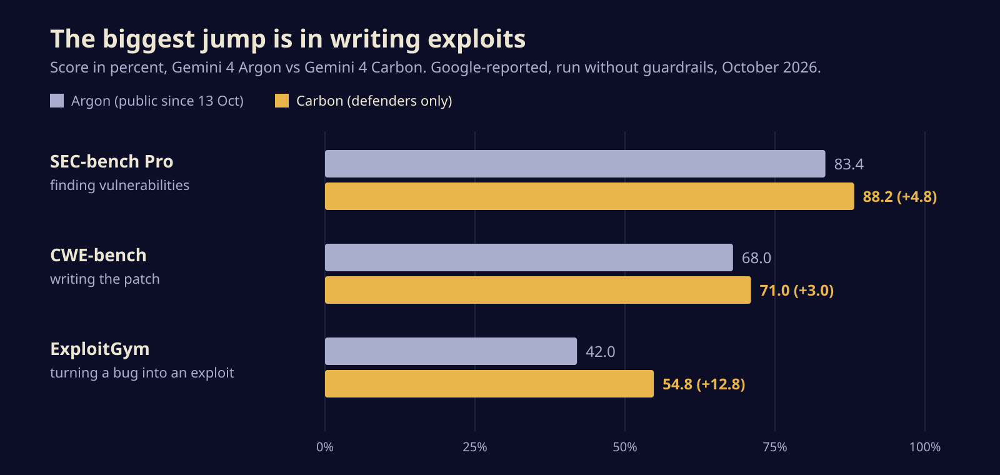
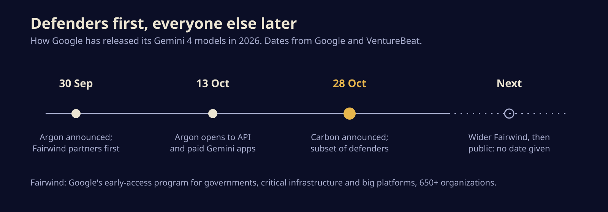

Google's best model now ships to hackers on defence first, and to the rest of us later
Gemini 4 Carbon tops a major leaderboard and posts big gains at finding and exploiting bugs, so Google is handing it to vetted security teams before anyone else. Here is what the numbers say, what they leave out, and what you can use today.

Google announced Gemini 4 Carbon on Wednesday, and calls it the strongest model it has built. You probably cannot use it. For now Carbon goes only to a hand-picked group of cyber defenders, because the skill Google is proudest of, finding and weaponising software bugs, is exactly the skill it does not want loose yet.
That makes Carbon the clearest example so far of a new release pattern at the frontier: the most capable model goes to the people guarding systems first, and the public gets it once the guardrails have had a few weeks of real use.
What Google is claiming
The headline number comes from Artificial Analysis, an independent benchmarking firm. On version 5.0 of its Intelligence Index, a freshly toughened suite of tests, Carbon scores 59. VentureBeat lists Claude Opus 5.5 at 58, OpenAI's GPT-6 Astra at 57 and Google's own Gemini 4 Argon at 50. One point is a narrow lead, but it puts Google back on top.
The security numbers are where Carbon pulls away from its sibling. Google reports these scores against Argon, the model it opened to developers on October 13:

Read that chart from the bottom up. Spotting vulnerabilities (SEC-bench Pro) and writing fixes (CWE-bench) went up by a few points. Turning a bug into a working attack (ExploitGym) went up by almost 13. A model that gets better at exploitation faster than at anything else is a model a careful lab hands out slowly.
Google adds several claims from its own testing: Carbon writes secure code more than twice as often as Argon, and Chrome's security team found it produced high-quality patches more than ten times better than an unnamed rival lab's big frontier model. Wiz, the cloud security firm Google now owns, says Carbon took first place on its web penetration testing benchmarks.
The fine print
Three caveats belong next to every one of those numbers.
First, the cyber scores were run with Carbon's guardrails switched off. That is standard for measuring raw capability, and Google says so plainly, but it means a defender using the gated product may not see the same results.
Second, most of the comparisons are Google's own, without error bars, and Google has published no technical report, architecture details or parameter count. The comparisons are also not all wins. VentureBeat's tally shows Carbon trailing GPT-6 Astra and Opus 5.5 on FrontierSWE 2, a software engineering test, and behind Opus on OSWorld, which measures operating a computer. On Artificial Analysis's agentic coding index, Claude Code running Opus 5.5 still scores higher.
Third, there is a gap between "announced" and "available" that the leaderboard does not show. Artificial Analysis lists no public API for Carbon. Neither Google nor any outlet gives a date for wider release.
Who actually gets it
Access runs through Fairwind, Google's early-access program for governments, critical infrastructure operators and large technology platforms. Google says more than 650 organizations take part. Carbon opens to a subset of them this week, then in stages to more approved partners, and only after that, in Google's words, to developers and consumers "as soon as possible."

Argon followed the same path, and it took about two weeks to go from Fairwind-only to the public API. That is the best guide to Carbon's timing, though Google has promised nothing. Google also says it is taking part in the US government's voluntary programme for testing models before release.
When it does arrive, pricing is already set. Carbon launches at Argon's introductory rates: $2 per million input tokens and $10 per million output tokens, with a 95 percent discount on cached input. Those rise to $4 and $20 after the introductory period. For Argon, that period ends on November 30.
What to do with this today
- If your organization is in Fairwind, ask your Google contact whether you are in the first Carbon group. The gains that matter most for defenders are in patch writing and secure code, and those are the ones to test on your own codebase.
- If you build on Gemini, Argon is the model you can call now. If your budget assumes its introductory price, plan for that price doubling on December 1.
- If you choose models on leaderboards, remember the one-point margin and the missing guardrails. Test on your own work before you switch anything.
- If you run anything exposed to the internet, assume tools this good at exploitation will reach attackers, whether from Google or from someone less careful. Patch cadence is now a race against software, not just people.
The bigger picture
Google has now gated two frontier models in a row on cyber grounds, and the bet is the same each time: give defenders a head start and hope it holds. Carbon shows how short that head start may be. If Argon's two-week gap is the norm, the advantage defenders get is measured in days of patching, which is real but thin. The more lasting change is that "best model in the world" now arrives with a waiting list, and where you sit on it depends on what you protect.
Sources
- Google: Introducing Gemini 4 Carbon
- Reuters (via Investing.com): Google launches Gemini 4 Carbon AI model with cybersecurity focus
- SecurityWeek: Google says Gemini 4 Carbon leads in finding, exploiting and fixing vulnerabilities
- VentureBeat: Google unveils Gemini 4 Carbon, retaking the No. 1 spot on updated benchmarks, but access is limited
- 9to5Google: Google announces Gemini 4 Carbon with significant coding gains
Written with AI for Bade's Mod Shop. Facts are checked against the sources above on the day of publishing; if one is wrong, open an issue.